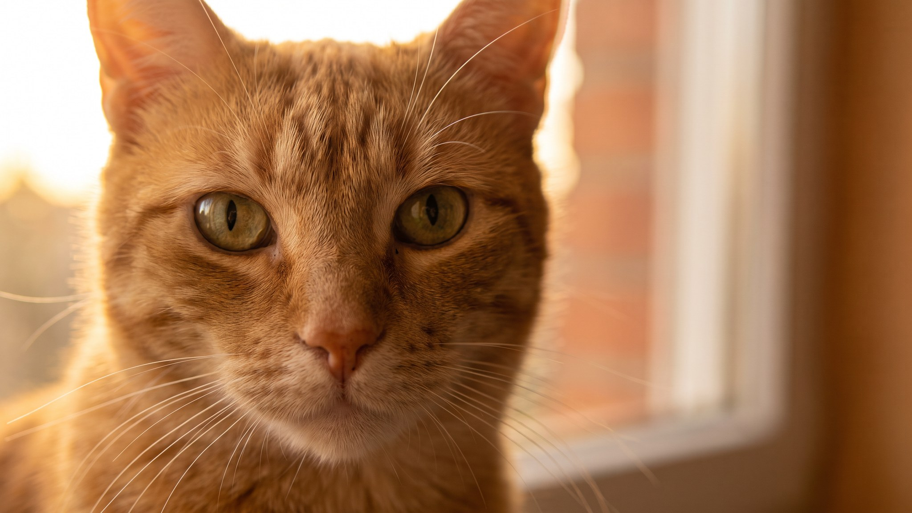

Кошка смотрит на голубя за окном и начинает странно трещать зубами: не мяукать, а именно щёлкать. Или встречает вас с работы протяжным курлыканьем, совсем непохожим на обычное «мяу». Эти звуки означают разные вещи, и кошка явно ждёт ответа. Разбираем три вида таких сигналов и что стоит сказать в ответ.
🐾 Хотите понять, что кошка говорит вам?
Опишите ситуацию или пришлите видео в AnimaLife — AI разберёт поведение вашего питомца и подскажет, что делать. Бесплатно, ответ за минуту.
Разобрать поведение → Разобрать в MAX →
У вас iPhone? AnimaLife есть в App Store
Трель звучит как «мрр-р-р» с вибрирующим завершением, мягкая и мелодичная. Это звук из «кошачьего детства»: кошки-мамы трелью подзывали котят идти за собой. Взрослая кошка переносит тот же сигнал на отношения с хозяином.
Когда слышите трель, кошка говорит одно из двух: «привет, рада тебя видеть» или «иди за мной, покажу кое-что». Если она при этом двигается к миске, лотку или двери, зовёт. Если просто трётся, поздоровалась.
Лучший ответ — спокойный тихий звук в ответ или ласка. Кошки, которым регулярно отвечают, общаются активнее.
Это тот самый зубной стрекот у окна, когда на подоконнике сидит голубь. Нижняя челюсть мелко дрожит, иногда вырывается что-то вроде «ек-ек-ек». Звук явно не для хозяина: кошка смотрит строго на птицу и игнорирует всё вокруг.
По одной версии, это отработка хватательного укуса: мышцы и рефлекс готовятся к атаке, которая всё равно не состоится. По другой версии, это фрустрация от невозможной охоты. Скорее всего, верно и то и другое.
Чаттеринг не тревожный сигнал, реагировать не надо. Если кошка начинает трещать и явно нервничает (бьёт хвостом, уши назад), просто уберите её от окна или закройте птицу от взгляда жалюзи.
Часть кошек «разговаривает» постоянно, особенно ориентальные породы и беспородные с высокой социальностью. Они выдают серии тихих звуков при взгляде на хозяина, во время игры или когда хотят внимания. Это нормальное поведение, а не тревога.
Что работает в ответ:
Если кошка стала трелить и курлыкать заметно больше, чем обычно, и при этом ест меньше или выглядит беспокойной, стоит обсудить с ветеринаром: внезапное изменение голосовой активности иногда связано с болью или гормональными изменениями.
Материал носит информационный характер и не заменяет очную консультацию ветеринара.
🐾 У вашей кошки так же?
Расскажите в AnimaLife, как ведёт себя ваш питомец, — приложение объяснит причину и даст пошаговый план. Бесплатно, без записи к специалисту.
Разобрать свой случай → Разобрать в MAX →
У вас iPhone? AnimaLife есть в App Store
🐾 Понравился разбор?
Подпишитесь на канал — каждый день разбираем по одному тревожному симптому у кошек и собак: что в пределах нормы, а когда пора к врачу. Подпишитесь, чтобы не пропустить разбор, который может спасти здоровье вашего питомца.